컴퓨터활용능력-1급 (2012-09-22 기출문제)
1과목: 컴퓨터 일반
1. 다음 중 암호화에 사용되는 키를 서로 다르게 하여, 암호화할 때 사용하는 키는 공개하고 복호화할 때의 키는 개인키로 비밀이 보장되는 방식으로 옳은 것은?
- 비대칭 암호화 기법
- 방화벽
- 디지털 서명(Digital Signature)
- 단일키 암호화 기법
(정답률: 83%)

2. 다음 중 서로 다른 컴퓨터끼리 원활한 통신을 수행하기 위해 제정된 OSI 7 Layer 통신 구조에서 하위 세 개 계층에 속하지 않는 것은?
- 물리계층
- 네트워크 계층
- 전송계층
- 데이터 링크 계층
(정답률: 48%)
3. 다음 중 한글 Windows XP에서 플러그 앤 플레이(Plug&Play) 기능을 지원하지 않는 하드웨어를 설치하는 방법으로 옳은 것은?
- [장치 관리자] 창에서 [새 하드웨어 추가] 단추를 선택하여 표시되는 [하드웨어 업그레이드]를 이용하여 설치한다.
- [제어판]에 있는 [새 하드웨어 추가]를 선택하여 표시되는 [하드웨어 추가 마법사]를 이용하여 설치한다.
- 먼저 하드웨어를 장착하고 컴퓨터를 재부팅하면 표시되는 [새 하드웨어 검색 마법사]를 이용하여 설치한다.
- 한글 Windows XP에서 플러그 앤 플레이(Plug&Play) 기능을 지원하지 않는 장치는 설치가 불가능하다.
(정답률: 55%)
4. 다음 중 한글 Windows XP에서 [네트워크 설정 마법사]에 관한 설명으로 옳지 않은 것은?
- 네트워크 설정 마법사를 실행하려면 관리자 또는 Administrators 그룹의 구성원으로 로그온해야 한다.
- 네트워크 설정 마법사를 이용하여 인터넷 프로토콜(TCP/IP)에서 사용하는 IP 주소를 설정할 수 있다.
- 네트워크 설정 마법사를 이용하여 네트워크에 있는 모든 컴퓨터가 하나의 컴퓨터를 통해서 인터넷에 연결되도록 설정할 수 있다.
- 네트워크 설정 마법사를 이용하여 파일 및 프린터 공유를 할 수 있다.
(정답률: 33%)
5. 다음 중 한글 Windows XP의 [키보드 등록정보] 대화상자에 대한 내용으로 옳지 않은 것은?
- 키보드 입력 위치를 표시하는 커서의 모양을 바꿀 수 있다.
- 키 반복 속도를 조절할 수 있다.
- 커서 깜박임 속도를 조절할 수 있다.
- 키 재입력 시간을 조절할 수 있다.
(정답률: 75%)
6. 다음 중 한글 Windows XP에서 사용하는 USB에 대한 설명으로 옳지 않은 것은?
- 플러그 앤 플레이 설치를 지원하는 외부 버스이다.
- 컴퓨터를 종료하거나 다시 시작하지 않아도 USB 장치를 연결하거나 연결을 끊을 수 있다.
- USB는 범용 병렬 장치를 연결할 수 있게 해 주는 컴퓨터 인터페이스이며 12Mbps의 속도로 데이터를 전송할 수 있다.
- 주변 기기를 최대 127개까지 연결할 수 있다.
(정답률: 70%)
7. 다음 중 컴퓨터 사용 도중 발생하는 문제들을 해결하는 방법으로 옳지 않은 것은?
- 시스템 속도가 느린 경우: [제어판]-[프로그램 추가/제거]-[Windows 구성 요소 추가/제거]-[인덱스 서비스]를 선택하여 설치한다.
- 네트워크 통신이 되지 않을 경우: 케이블 연결과 프로토콜 설정을 확인하여 수정한다.
- 메모리가 부족한 경우: 메모리를 추가 또는 불필요한 프로그램을 종료한다.
- 제대로 동작하지 않는 하드웨어가 있을 경우 : 올바른 장치 드라이버를 재 설치한다.
(정답률: 66%)
8. 다음 중 Windows 탐색기의 기능과 구조에 대한 설명으로 옳지 않은 것은?
- 폴더 영역과 파일 영역의 크기를 조절하려면 양쪽 영역을 구분하는 경계선을 좌우로 드래그한다.
- 폴더 창에서 폴더를 선택한 후 숫자 키패드의 '/'를 누르면 선택된 폴더의 모든 하위 폴더를 표시해 준다.
- 폴더 창에서 폴더를 선택한 후 왼쪽 방향키(←)를 누르면 선택된 폴더가 열려있을 때는 닫고, 닫혀있으면 상위 폴더가 선택된다.
- 폴더 창에서 폴더를 선택한 후 'Backspace' 키를 누르면 상위 폴더가 선택된다.
(정답률: 56%)
9. 다음 중 무선 근거리 통신네트워크(WLAN)에 대한 설명으로 옳지 않은 것은?
- 현재 개발 및 상용중인 고속 무선 LAN은 2.4GHz대에서 운용된다.
- 고속 무선 LAN에서 사용되는 무선 전송방식에는 CDMA, TDMA, 적외선 방식이 있다.
- ISP(Internet Service Provider)에 직접 연결하는 기술이다.
- 무선 LAN은 인위적으로 전자기 신호를 유도하는 케이블이 필요하지 않으므로 설치장소에 제한을 받지 않는다.
(정답률: 46%)
10. 다음 중 통신 관련 장비에 관한 설명으로 옳은 것은?
- 리피터 : 동일한 전송 계층 이상의 프로토콜을 사용하는 분리된 네트워크를 연결하는 것으로 네트워크 층간을 연결하는 장비이다.
- 브리지 : 두 개 이상의 동일한 LAN 사이를 연결하여 네트워크의 범위를 확장할 때 사용하는 장비이다.
- 라우터 : 동일한 프로토콜을 사용하는 네트워크에서 물리 계층이 서로 다른 LAN간에 연결되는 장비이다.
- 게이트웨이 : 프로토콜이 전혀 다른 네트워크 사이를 결합하는 장비이다.
(정답률: 40%)
11. 다음 중 전자음향장치나 디지털 악기들을 연결하여 음악의 연주 정보 및 여러 가지 기능에 대한 정보를 전달할 수 있는 인터페이스로 옳은 것은?
- WAV
- RA/RM
- MP3
- MIDI
(정답률: 72%)
12. 다음 중 클럭 주파수에 대한 설명으로 옳지 않은 것은?
- 전류가 흐르는 상태(ON)와 흐르지 않는 상태(OFF)가 주기적으로 반복되어 작동하는데, 이 전류의 흐름을 클럭 주파수라고 한다.
- 1MHz는 1,000,000Hz를 의미하며, 1Hz는 1초 동안 1,000 번의 주기가 반복되는 것을 의미한다.
- CPU가 기본적으로 클럭 주기에 따라 명령을 수행한다고 할 때, 이 클럭값이 높을수록 CPU는 빠르게 일을 하고 있는 것으로 볼 수 있다.
- 클럭 주파수를 높이기 위해 메인보드로 공급되는 클럭을 CPU 내부에서 두 배로 증가시켜 사용하는 클럭 더블링(Clock Doubling)이란 기술이 486이후부터 사용되었다.
(정답률: 59%)
13. 다음 중 컴퓨터를 관리하는 효율적인 방법으로 옳지 않은 것은?
- 컴퓨터를 이동하거나 부품을 교체할 경우에는 전원을 끄고 작업하는 것이 바람직하다.
- 시스템에 문제가 발생하면 시스템을 재부팅하고 하드디스크의 모든 파티션을 제거한다.
- 정기적으로 최신 바이러스 백신 프로그램을 사용하여 바이러스 감염을 방지하며, 중요한 데이터는 백업하여 둔다.
- 가급적 불필요한 프로그램은 설치하지 않도록 하며, 정기적으로 시스템을 점검한다.
(정답률: 85%)
14. 다음 중 휴지통에 대한 설명으로 옳지 않은 것은?
- 플로피디스크, USB 메모리, 네트워크상에서 삭제된 경우는 휴지통에 보관되지 않고 영구적으로 삭제된다.
- 하드 디스크가 분할되어 있거나 컴퓨터에 여러 개의 하드 디스크를 가지고 있는 경우 각 휴지통의 크기를 다르게 지정할 수 있다.
- 휴지통 내에 보관된 파일은 바로 사용할 수 없다.
- [Shift] + [Delete]로 파일을 삭제하면 해당하는 파일이 휴지통에 일시적으로 저장되어 복원시킬 수 있다.
(정답률: 77%)
15. 다음 중 네트워크의 구성(Topology)에서 성형(Star)에 관한 설명으로 옳지 않은 것은?
- Point-to-Point 방식으로 회선을 연결한다.
- 각 단말 장치는 중앙 컴퓨터를 통하여 데이터를 교환한다.
- 하나의 단말장치가 고장 나면 전체 통신망에 영향을 줄 수 있다.
- 단말 장치의 추가와 제거가 쉽다.
(정답률: 56%)
16. 다음 중 운영체제의 기능으로 옳지 않은 것은?
- 사용자와 컴퓨터 하드웨어 사이의 인터페이스 기능을 제공한다.
- 프로세서, 저장장치, 입출력 장치, 통신장치와 같은 컴퓨터 하드웨어와 데이터 등을 관리한다.
- 사용자들 간의 하드웨어 공동 사용 및 자원의 스케쥴링 등의 기능을 수행한다.
- 사용자 또는 응용 프로그램과 데이터베이스 사이에서 원활한 데이터의 공유 및 입출력을 하도록 관리해 주는 소프트웨어 시스템이다.
(정답률: 35%)
17. 다음에서 설명하는 운영체제의 용어로 옳은 것은?
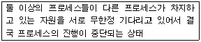
- 교착 상태(Dead Lock)
- 다중 스레딩(Multi threading)
- 상호 배제(Mutual Exclusion)
- 오류수정(Debugging)
(정답률: 75%)
18. 다음 중 MPEG 규격에 대한 설명으로 옳지 않은 것은?
- MPEG-2 : 차세대 텔레비전 방송이나 ISDN, 케이블망 등을 이용한 영상 전송을 위하여 제정되었으며, HDTV, 위성방송, DVD 등이 이 규격을 따르고 있다.
- MPEG-4 : 통신, PC, 방송 등을 결합하는 복합 멀티미디어 서비스의 통합 표준을 위한 것이다.
- MPEG-7 : CD와 같은 고용량 매체에서 동영상을 재생하기 위한 것으로, CD-I나 비디오CD 등이 이 규격을 따르고 있다.
- MPEG-21 : MPEG 기술들을 통합해 디지털 콘텐츠의 제작, 유통, 보안등 전 과정을 관리할 수 있는 기술이다.
(정답률: 60%)
19. 다음 중 통신의 회선공유 기술로 통신 회선의 대역폭을 일정한 시간 폭(Time Slot)으로 나누어 모든 단말기에 제공하여 여러 개의 단말기가 하나의 통신 회선을 사용할 수 있도록 하는 기술로 옳은 것은?
- FDM
- TDM
- SDM
- CDM
(정답률: 64%)
20. 다음 중 한글 Windows XP에서 설치된 하드웨어를 확인하거나 제거할 수 있는 창으로 옳은 것은?
- [장치 관리자] 창
- [레지스트리 편집] 창
- [작업 관리자] 창
- [하드웨어 추가/제거] 창
(정답률: 50%)
2과목: 스프레드시트 일반
21. 아래 시트에서 [A1:B5]와 [D1:D5]를 데이터 원본으로 하여 차트를 작성하려고 할 때 가장 적합한 종류는 어느 것인가?
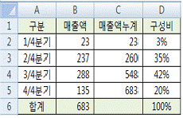
- 기본 축만 있는 세로 막대형과 꺽은선형 차트를 사용한 혼합형 차트
- 기본 축만 있는 방사형 차트
- 원형 대 가로 막대형
- 기본 축과 보조 축이 있는 세로 막대형과 꺽은선형 차트를 사용한 혼합형 차트
(정답률: 53%)
22. '=A20*B21' 이나 '...입니까?' 와 같이 곱셈 수식이나 의문문을 *와 ?의 기호를 이용하여 검색하고자 할 때 아래 그림의 [찾을 내용]에 입력해야 할 올바른 방법은?
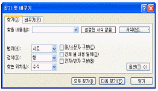
- ' 의 기호 뒤에 * 혹은 ?를 붙인다.
- ~ 의 기호 뒤에 * 혹은 ?를 붙인다.
- " 의 기호 뒤에 * 혹은 ?를 붙인다.
- * 혹은 ? 기호만 입력한다.
(정답률: 62%)
23. 다음 중 가상 분석 도구인 시나리오에 대한 설명으로 옳지 않은 것은?(문제 오류로 실제 시험장에서는 1, 4번이 정답처리 되었습니다. 여기서는 1번을 정답 처리 합니다.)
- 시나리오 작성시 변경 셀 상자에 하나의 참조 셀만 지정할 수 있다.
- 시나리오 보고서에서는 자동으로 계산을 다시 수행하지 않는다.
- 여러 시나리오를 비교하기 위해 시나리오를 한 페이지에 요약하는 보고서를 만들 수 있다.
- 시나리오 요약 보고서를 만드는 데는 결과 셀이 필요하지 않다.
(정답률: 75%)
24. 아래 시트를 출력할 경우 4 페이지로 출력된다. 다음 중 페이지 설정의 배율 속성을 이용하여 [A1:I30] 영역의 모든 데이터가 한 페이지에 인쇄되도록 설정하려 한다. 설정방법으로 가장 옳은 것은?
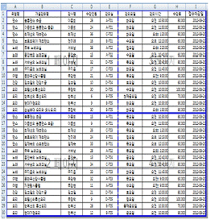
- [축소 확대/배율]을 100%로 한다.
- [자동 맞춤]의 용지 너비를 '1'로하고 [용지 높이]를 공백으로 한다.
- [자동 맞춤]의 용지 너비를 공백으로 하고 [용지 높이]를 '1'로 한다.
- [자동 맞춤]의 용지 너비를 '1'로하고 [용지 높이]를 '1'로 한다.
(정답률: 69%)
25. 다음과 같이 (A2:A5) 범위의 글꼴을 11포인트 크기의 '돋움'으로 설정하는 매크로를 만들려고 한다. 사용된 구문이 잘못된 것은?
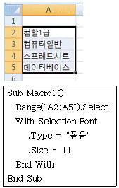
- Range
- Select
- Type
- End With
(정답률: 42%)
26. 다음 중 매크로를 작성하고 사용하는 방법에 대한 설명으로 옳지 않은 것은?
- [Ctrl]+[Shift]+[F8]을 눌러 매크로를 실행할 수도있으며, [Esc] 키를 눌러 매크로 실행을 중단할 수 있다.
- 매크로를 시작하는 위치에 상관없이 항상 정해진 위치에서 시작하려면 절대참조를 사용해야 한다.
- 기록된 매크로는 바로 가기 키를 지정할 수 있으며, 엑셀 고유의 바로 가기 키와 중복될 경우 매크로에 지정된 바로 가기 키가 우선한다.
- 매크로 이름을 Auto_Open 으로 지정하면 기록된 매크로가 파일을 열 때마다 자동으로 실행된다.
(정답률: 44%)
27. 다음 프로시저는 [C1:C20] 영역에 있는 절대 값이 0.5보다 작은 숫자를 모두 0으로 설정한다. ⓐ ~ ⓓ 부분에 입력할 내용을 순서대로 바르게 나열한 것은?
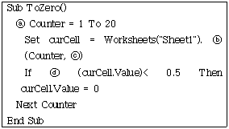
- For → Range → C → Int
- While → Cells → 3 → Int
- For → Cells → C → Abs
- For → Cells → 3 → Abs
(정답률: 40%)
28. 다음 그림과 같이 [B2:B5] 영역에 데이터 유효성 검사를 설정하였을 때 입력할 수 없는 값은?
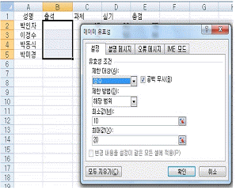
- 0
- 10
- 15
- 20
(정답률: 77%)
29. 다음 중 엑셀의 작업 환경 설정을 위한 [Excel 옵션]의 각 메뉴에 대한 설명 중 옳지 않은 것은?
- [기본 설정]-[Excel에서 가장 많이 사용하는 옵션]: '실시간 미리 보기 사용'을 선택하면 선택 사항을 커서로 가리킬 때 해당 기능이 문서에 어떻게 영향을 주는지 결과를 미리 보여 준다.
- [수식]-[수식 작업]: '수식에 표 이름 사용'을 선택하면 데이터가 입력된 범위에 행 또는 열 레이블이 있을 경우, 이 레이블을 정의된 이름처럼 수식에 이름으로 사용할 수 있다.
- [저장]-[통합 문서 저장]: '다음 형식으로 파일 저장'에서 통합 문서의 저장 파일 형식을 지정할 수 있다.
- [고급]-[이 통합 문서의 계산 대상]: '다른 문서에 대한 링크 업데이트'를 선택하면 워크시트와 연결된 외부 문서에 포함된 결과 값의 복사본을 저장한다.
(정답률: 59%)
30. 다음 중 워크시트에 입력된 차트, 도형, 그림, 워드아트, 클립아트, 괘선 등 모든 그래픽 요소를 제외하고 텍스트만 빠르게 출력하려고 할 때 설정해야 할 항목으로 옳은 것은?
- [페이지 설정] 대화상자의 [시트] 탭에서 [간단하게 인쇄] 항목
- [페이지 설정] 대화상자의 [시트] 탭에서 [인쇄 영역 설정] 항목
- [인쇄] 대화 상자의 [인쇄 대상]에서 [인쇄 영역 설정] 항목
- [인쇄] 대화 상자의 [인쇄 대상]에서 [간단하게 인쇄] 항목
(정답률: 49%)
31. 아래 시트에서 [표1]과 [표2]를 이용하여 [표3]의 최대 실적품명을 계산하려고 한다. 다음 중 [B15] 셀의 함수식으로 옳은 것은?
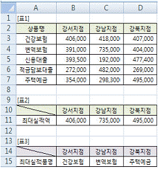
- =INDEX($A$2:$D$7,1,B10:B11)
- =LOOKUP($A$2:$D$7,1,B10:B11)
- =DGET($A$2:$D$7,1,B10:B11)
- =MATCH($A$2:$D$7,1,B10:B11)
(정답률: 36%)
32. 아래 시트에서 [D1] 셀을 선택한 상태에서 수식 입력줄의 (B1+C1)을 선택하고 [F9] 키를 누르면 나타나는 현상에 대한 설명으로 옳은 것은?
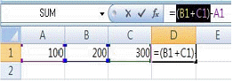
- 선택된 수식이 계산되어 500이 표시된다.
- 선택된 해당 셀의 값이 표기되어 (200+300)이 표시된다.
- 수식 입력줄의 모든 수식이 계산되어 400이 표시된다.
- 수식 입력줄의 셀의 값이 표기되어 (200+300)-100이 표시된다.
(정답률: 55%)
33. 아래 시트와 같이 [A1:A4] 영역의 텍스트를 [C1:D4] 영역으로 나누기를 실행하려고 한다. 다음 중 텍스트 나누기를 실행하기 위한 작업 과정으로 옳지 않은 것은?
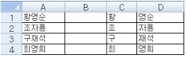
- 텍스트 마법사 3단계 중 1단계에서 '너비가 일정함'을 선택한다.
- 텍스트 마법사 3단계 중 2단계에서 '구분 기호'중 '탭'을 선택한다.
- 필드의 너비(열 구분선)을 지정하기 위해 첫 글자 다음 위치에 마우스로 클릭한다.
- 텍스트 마법사 3단계 중 3단계에서 '대상'을 '=$C$1'로 한다.
(정답률: 33%)
34. 다음은 엑셀의 차트 기능을 설명한 것이다. ⓐ ~ ⓒ에 들어갈 내용을 순서대로 나열한 것은?
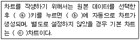
- [F11] → 새로운 차트 시트 → 묶은 세로 막대형
- [F11] → 현재 통합문서에 있는 워크시트 → 묶은 가로 막대형
- [F8] → 새로운 차트 시트 → 묶은 가로 막대형
- [F8] → 현재 통합문서에 있는 워크시트 → 묶은 가로 막대형
(정답률: 49%)
35. [A1]셀의 값 "TR-A-80"을 [B1]셀에 "TR-A80"으로 바꾸어 표시하고자 할 때, 다음 수식 중 옳지 않은 결과가 나오는 것은?
- =REPLACE(A1,5,1,"")
- =CONCATENATE(LEFT(A1,4),MID(A1,6,2))
- =SUBSTITUTE(A1,"-","",5)
- =LEFT(A1,4)&RIGHT(A1,2)
(정답률: 45%)
36. 다음 시트에서 배열수식을 이용하여 한꺼번에 금액 [D2:D5]을 구하려고 한다. 다음 중 [D2:D5]영역에 수식을 입력한 후 Ctrl+Shift+Enter를 누르고 난 후 [D2]셀에 입력된 배열수식으로 옳은 것은? (금액 = 수량 * 단가)
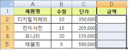
- {=B2*C2}
- {=B2:B5*C2:C5}
- {=B2*C2:B5*C5}
- {=SUMPRODUCT(B2:B5,C2:C5)}
(정답률: 64%)
37. 다음 시트에서 자격증 응시자에 대한 과목별 평균을 구하려고 할 때 [C11] 셀에 입력할 배열 수식으로 옳은 것은?
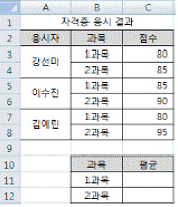
- {=AVERAGE(IF(MOD(ROW(C3:C8),2)=0,C3:C8))}
- {=AVERAGE(IF(MOD(ROW(C3:C8),2)=1,C3:C8))}
- {=AVERAGE(IF(MOD(ROWS(C3:C8),2)=0,C3:C8))}
- {=AVERAGE(IF(MOD(ROWS(C3:C8),2)=1,C3:C8))}
(정답률: 57%)
38. 다음 중 부분합에 대한 설명으로 옳지 않은 것은?
- 부분합을 작성하려면 첫 행에는 열 이름표가 있어야 하며, 그룹화할 항목을 기준으로 반드시 정렬해야 제대로 된 결과를 얻을 수 있다.
- 부분합을 제거하면 부분합과 함께 표에 삽입된 윤곽 및 페이지 나누기도 모두 제거된다.
- 그룹화를 위한 데이터의 정렬을 오름차순으로 할 때와 내림차순으로 할 때의 그룹별 부분합의 결과는 서로 다르다.
- 부분합 대화상자에서 '새로운 값으로 대치'를 해제하지 않고 부분합을 실행하면 첫 번째 작성한 부분합은 삭제되고 두 번째에 작성한 부분합만이 표시된다.
(정답률: 51%)
39. 다음 중 입력자료에 지정된 표시 형식에 따른 결과로 옳은 것은?
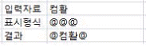
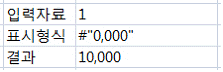
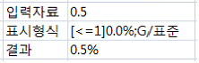
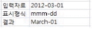
(정답률: 50%)
40. 다음 프로시저에 대한 설명으로 옳지 않은 것은?
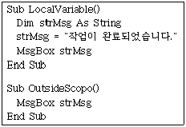
- strMsg를 문자열 변수로 선언하였다.
- 변수 strMsg에 "작업이 완료되었습니다."라는 문자열을 대입시킨다.
- 변수 strMsg 내용을 MsgBox를 이용해 대화상자에 표시한다.
- OutsideScope()에도 LocalVariable()에서 선언된 strMsg 변수가 적용되어 MsgBox를 이용해 대화상자에 표시한다.
(정답률: 60%)
3과목: 데이터베이스 일반
41. 다음 문자열 함수의 결과 값으로 옳은 것은?
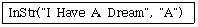
- 0
- 1
- 8
- 4
(정답률: 55%)
42. 다음 <학생> 테이블을 이용하여 월별로 생일인 학생수를 표시하는 폼을 만들기 위한 레코드 원본으로 옳은 것은?
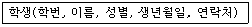
- select month(*) as 월, sum(생년월일) as 생일자수 from 학생 group by month(생년월일)
- select month(생년월일) as 월, count(*) as 생일자수 from 학생 group by month(생년월일)
- select month(생년월일) as 월, count(*) as 생일자수 from 학생 group by 생년월일
- select month(*) as 월, count(생년월일) as 생일자수 from 학생 group by 생년월일
(정답률: 48%)
43. 다음 중 보고서의 각 구역의 유형 및 용도의 설명으로 옳지 않은 것은?
- 보고서 머리글에는 로고, 보고서 제목과 같이 매페이지마다 표시될 항목을 설정한다.
- 보고서 바닥글에는 합계나 개수와 같이 보고서 데이터에 대한 요약 정보를 나타낼 수 있다.
- 페이지 바닥글은 페이지 번호와 출력 날짜와 같은 항목을 표시하는 데 유용하다.
- 그룹화된 보고서의 경우, 그룹 머리글을 이용하여 그룹의 이름이나 합계와 같은 정보를 표시할 수 있다.
(정답률: 63%)
44. '거래처'별로 그룹이 설정된 '매출 내역 보고서'에서 본문 영역에 있는 'txt순번' 텍스트상자 컨트롤에 해당 거래처별로 매출의 순번(1,2,3...)을 표시하려고 한다. 다음 중 'txt순번' 컨트롤의 속성 설정 방법으로 옳은 것은?
- 컨트롤 원본 속성을 '1'로 설정하고, 누적합계 속성을 '아니오'로 설정
- 컨트롤 원본 속성을 '1'로 설정하고, 누적합계 속성을 '예'로 설정
- 컨트롤 원본 속성을 '=1'로 설정하고, 누적합계 속성을 '모두'로 설정
- 컨트롤 원본 속성을 '=1'로 설정하고, 누적합계 속성을 '그룹'로 설정
(정답률: 57%)
45. 다음 중 <학생> 테이블에서 '학년' 필드가 2인 레코드의 갯수를 계산하고자 할 때의 수식으로 옳은 것은? 단,<학생> 테이블의 '학번' 필드는 기본 키이다.
- =dlookup(*,학생,학년=2)
- =dlookup("*","학생","학년=2")
- =dcount("*","학생","학년=2")
- =dcount(학번,학생,학년=2)
(정답률: 63%)
46. 다음 함수 중 화면에 정보를 표시하기 위하여 사용하는 것으로 옳은 것은?
- SetValue
- TransferText
- MsgBox
- Beep
(정답률: 66%)
47. 다음 중 액세스에서 작성한 보고서를 다른 형식으로 바꾸어 내보내기 할 수 없는 형식은?(문제 오류로 실제 시험장에서는 모두 정답처리 되었습니다. 여기서는 1번을 정답처리 합니다.)
- Excel
- Word
- HTML 문서
- Access 데이터베이스
(정답률: 69%)
48. 다음 중 기본 키(Primary Key)로 사용되는 필드 또는 필드 집합의 특징에 대한 설명으로 옳지 않은 것은?
- 기본 키 필드는 각 행을 고유하게 식별할 수 있도록 중복된 값이 입력되어서는 안 된다.
- 기본 키 필드는 Null 값이 들어 있어서는 안 된다.
- 기본 키 필드의 값은 다른 테이블에서 참조될 수 있으므로 변경되어서는 안 된다.
- 데이터 형식이 OLE 개체인 것은 기본 키로 지정할 수 없다.
(정답률: 50%)
49. 다음 중 개체관계(Entity Relationship) 모델에 대한 설명으로 옳지 않은 것은?
- 데이터베이스를 구성하는 개체와 이들간의 관계를 개념적으로 표시한 모델이다.
- 개체 관계도에서 타원은 개체 타입을 나타내며, 사각형은 속성을 의미한다.
- E-R 모델에서 정의한 데이터를 관계형 데이터베이스에 저장하기 위해서는 각각의 개체를 테이블로 변환시켜야 한다.
- E-R 모델에서 속성은 관계형 데이터 모델에서 필드로 변환된다.
(정답률: 57%)
50. 다음 중 폼에 대한 설명으로 옳지 않은 것은?
- 입력 및 편집 작업을 위한 인터페이스이다.
- 폼을 작성하기 위한 원본으로는 테이블만 가능하다.
- 폼을 이용하면 여러 개의 테이블에 데이터를 한 번에 입력할 수 있다.
- 바운드(Bound) 폼과 언바운드(Unbound) 폼이 있다.
(정답률: 64%)
51. 다음 그림과 같이 '학과명' 필드가 'txt조회' 컨트롤에 입력된 문자를 포함하는 레코드만을 표시하도록 하는 프로시저의 코드로 옳은 것은?
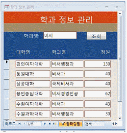
- Me.Filter="학과명='*"& txt조회& "*'"
Me.FilterOn=True - Me.Filter="학과명='*"& txt조회& "*'"
Me.FilterOn=False - Me.Filter="학과명 like '*"& txt조회& "*'"
Me.FilterOn=True - Me.Filter="학과명 like '*"& txt조회& "*'"
Me.FilterOn=False
(정답률: 61%)
52. 다음 중 보고서의 작성에 대한 설명으로 옳지 않은 것은?
- 보고서의 레코드 원본으로 외부 엑셀 파일에 대한 연결 테이블(Linked Table)을 사용할 수 있다.
- 보고서의 레코드 원본으로 SQL문을 지정하면 그 쿼리 결과를 이용하여 보고서를 만들 수 있다.
- 보고서의 레코드 원본으로 저장해 놓은 쿼리를 사용하는 경우, 쿼리가 바뀌면 변경된 쿼리를 이용하여 보고서가 작성된다.
- 보고서의 레코드 원본으로 테이블을 사용할 수 있으며, 이 경우에 보고서에서 수정된 내용은 테이블에 반영된다.
(정답률: 50%)
53. 다음 중 하위 쿼리(Sub query)의 설명으로 옳지 않은 것은?
- 주 쿼리에서 IN 조건부를 사용하여 하위 쿼리의 일부 레코드에 동일한 값이 있는 레코드만 검색할 수 있다.
- 하위 쿼리에서 반환하는 값이 1개일 때는 기본 쿼리에서 ON 연산자를 쓸 수 있다.
- SELECT 문의 필드 목록이나 WHERE 또는 HAVING 절에서 식 대신에 하위 쿼리를 사용할 수 있다.
- 주 쿼리에서 ALL 조건부를 사용하여 하위 쿼리에서 검색된 모든 레코드와 비교를 만족시키는 레코드만 검색할 수 있다.
(정답률: 38%)
54. 다음 중 크로스탭 쿼리에 관한 설명으로 옳지 않은 것은?
- 크로스탭 쿼리를 이용하여 특정한 필드의 합계, 평균, 개수와 같은 요약 값을 표시할 수 있다.
- 열과 행 방향의 표 형태로 데이터의 집계를 할 수 있다.
- 조건을 지정할 필드를 표시한 후 요약 행에 '조건'을 선택하고 크로스탭 행은 빈칸으로 남겨 둔 상태에서 조건란에 사용할 조건식을 입력하면 쿼리 결과 표시할 레코드를 제한할 수 있다.
- 행 머리글은 한 개의 필드만 지정할 수 있지만 열머리글은 여러 개의 필드를 지정할 수 있다.
(정답률: 66%)
55. 폼 디자인을 잘못하여 <A화면>과 같이 표시되어 <B화면>과 같이 표시되도록 설정하려고 한다. 다음 중 설정 방법으로 옳은 것은?
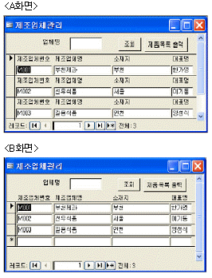
- 폼의 '기본 보기' 속성을 '연속 폼'으로 변경한다.
- 폼의 '기본 보기' 속성을 '단일 폼'으로 변경한다.
- 본문의 모든 레이블 컨트롤을 폼 머리글로 옮긴다.
- 본문의 모든 텍스트 상자 컨트롤을 폼 머리글로 옮긴다.
(정답률: 33%)
56. 다음 중 하나의 필드에 할당되는 크기(바이트 수 기준)가 가장 작은 데이터 형식은 무엇인가?
- 정수(Long)
- 날짜/시간
- 통화
- 복제 ID
(정답률: 61%)
57. 유효성 검사 규칙이 다음과 같이 설정되었을 경우 입력 데이터가 "30000"이 입력될 때의 설명으로 옳은 것은?
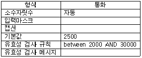
- 유효성 검사 규칙에 어긋나지 않으므로 정상적으로 입력된다.
- 유효성 검사 규칙이 잘못 설정되었으므로 에러 메시지가 나타난다.
- 유효성 검사 규칙에 어긋나고, 유효성 검사 메시지가 지정되지 않았으므로 표준 오류 메시지를 표시하고 입력되지 않는다.
- 유효성 검사 규칙에 어긋나고, 유효성 검사 메시지가 지정되지 않아서 유효성 검사 메시지를 입력하라는 오류 메시지가 표시된다.
(정답률: 58%)
58. 다음과 같은 보고서를 작성하기 위해 설정해야 하는 정렬 및 그룹화에 대한 설명으로 옳은 것은?
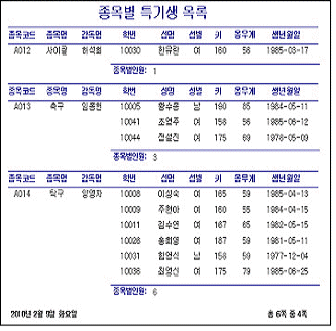
- 종목코드와 성명을 기준으로 오름차순으로 정렬하고 종목코드를 기준으로 그룹화 한다.
- 성명과 종목코드를 기준으로 오름차순으로 정렬하고 성명을 기준으로 그룹화 한다.
- 종목명과 학번을 기준으로 오름차순으로 정렬하고 학번을 기준으로 그룹화 한다.
- 종목명과 학번을 기준으로 오름차순으로 정렬하고 종목명을 기준으로 그룹화 한다.
(정답률: 61%)
59. 다음 중 입력 마스크에 대한 설명으로 옳지 않은 것은?
- 입력 마스크는 필드에 입력할 수 있는 데이터를 제한하는 것으로 세미콜론(;)으로 구분된 3개 구역으로 구분된다.
- 입력 마스크의 첫 번째 구역은 사용자 정의 기호를 사용하여 입력 마스크를 지정한다.
- 서식 문자 저장 여부를 지정하는 입력 마스크의 두번째 구역이 '0'이면 서식문자를 제외한 입력 값만 저장한다.
- 입력 마스크의 세 번째 구역은 데이터가 입력되어야 하는 자리에 표시될 문자를 지정한다.
(정답률: 46%)
60. 다음 중 데이터베이스 관리 시스템(DBMS)의 제어 기능에 대한 설명으로 옳지 않은 것은?
- 데이터의 갱신, 삽입, 삭제작업이 정확하게 수행하여 무결성이 파괴되지 않도록 제어한다
- 여러 사용자가 데이터베이스를 동시에 접근하여 데이터를 처리하기 위한 병행제어 등을 정의하는 기능이다.
- 데이터의 검색, 갱신, 삽입, 삭제 등이 체계적으로 수행되도록 데이터 접근 수단을 정의하는 기능이다.
- 데이터의 내용에 대한 정확성과 안전성을 유지하기 위해 보안 및 권한 검사 등을 정의하는 기능이다.
(정답률: 34%)
비대칭 암호화 기법은 암호화에 사용되는 키와 복호화에 사용되는 키가 서로 다른 방식으로 생성되는 암호화 기법입니다. 이 방식은 공개키와 개인키를 사용하여 암호화와 복호화를 수행합니다. 공개키는 모두에게 공개되어 있으며, 이를 이용하여 암호화를 수행합니다. 반면, 개인키는 암호화된 데이터를 복호화할 때만 사용되며, 이는 개인적으로 보관되어야 합니다. 이러한 방식으로 암호화와 복호화에 사용되는 키가 서로 다르기 때문에, 암호화된 데이터를 해독하는 것이 매우 어렵습니다. 이러한 특징으로 인해 비대칭 암호화 기법은 안전한 통신을 위한 기술로 널리 사용되고 있습니다.